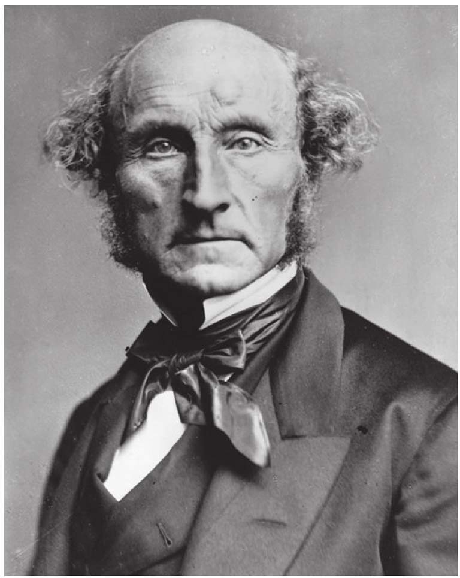
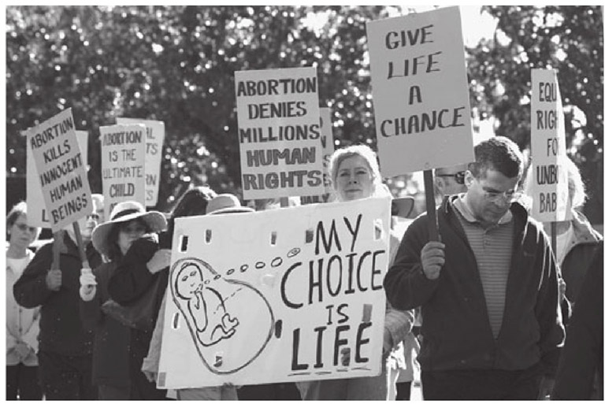
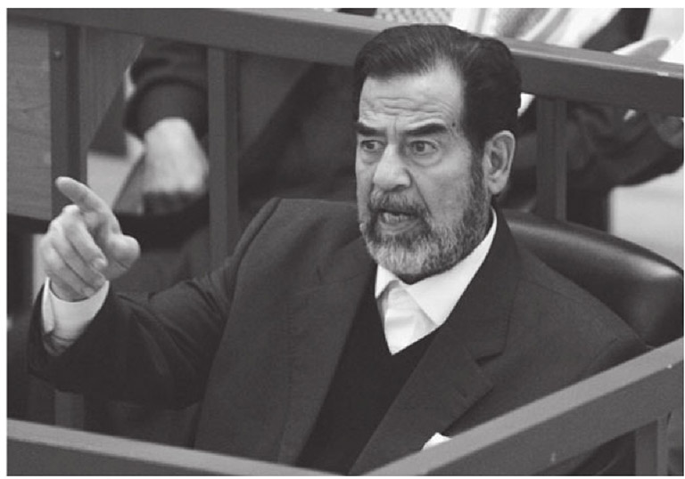

同性恋是罪恶吗？堕胎错在哪里？为什么种族主义是不好的？在任何一个法律体系中，这样的道德问题都是不可避免的。面对这些问题也是自由社会的基本特征之一。而且，国际舞台上也开始越来越多地使用道德用语。当一位美国总统用“邪恶轴心”来描述某些国家时，他已经（也许是无意识地）设定了衡量国家行为的规范性标准。自从联合国建立以来，这一标准就在范围不断扩大的国际宣言和公约中得以部分体现。
我们不能轻松避开道德问题，但如果有人确定或者承认在生活中具有一致的基本道德价值观，那么这一定会引发争议。尽管法律的理念和制度经常体现着道德价值观，但做好人、做好事并不一定必然等同于遵守法律。如果两者完全相同的话，这反而会非常奇怪了。
法律与社会所接受的道德实践（或称“实证道德”）之间的关系类似于两个部分交叉的圆环。在它们互相重叠的地方，我们可以找到法律和道德价值观的一致之处（例如，在所有的社会之中，谋杀在道德上和法律上都是被禁止的）。但是在这些重叠的区域之外，一方面，违法的行为不一定不道德（比如停车超出规定时间）；另一方面，不道德的行为不一定违法（比如通奸）。两者的交叉之处越多，法律就越容易得到社会成员的接受和尊重。
在有些情况下，特定个体或者群体的法律和道德准则会产生冲突。比如，和平主义者如被要求参军，他将会被迫成为良心反对者，他的违法行为可能会使他面临监禁的后果。类似地，许多国家的记者坚称自己具有不披露消息来源的权利，但如果他们被要求出庭作证以披露上述信息，那么这种坚持对他们就并无助益。
更加极端的情形是，法律在事实上与大多数人的道德价值观相冲突。比如，实行种族隔离制度的南非曾经利用法律达到不道德的目的。南非的政治体系是由少数白人创设的，它剥夺了每一位黑人的公民权，南非的法律在社会生活与经济生活的好几个重要方面歧视黑人。在这种情况下，我们也许会问，这样不正当的法律是否还有资格成为“法律”。法律必须符合道德吗？是不是什么都能成为法律？
在两位作为领军人物的法哲学家之间有场著名的，却并没有形成定论的论战，它旨在为“不道德的法律也能被视为‘法律’”这一观点奠定基础（如果有这种基础的话），但这场论战并未形成定论。论战的中心是战后的西德法院作出的一项判决。在1944年，纳粹统治期间，一位希望摆脱自己丈夫的女性向盖世太保告发了她的丈夫，因为他对希特勒的战争行为作出了侮辱性的评论。他因此受审，并被判处死刑，不过他的判决转而被改成了在苏德战争前线服兵役。战后，因为使丈夫失去自由，这位妻子被提起公诉。她的辩护理由是，根据1934年的一部纳粹法令，她丈夫的行为是违法的。但是法院仍然认定她有罪，理由是据以惩罚她丈夫的法令违反了“所有正派的人的健全良知和正义感”。
牛津大学的法理学教授H.L.A.哈特坚称，因为1934年的纳粹法律是正式生效的法律，所以法院的这一判决以及其他与其一致的类似判决都是错误的。相反，哈佛法学院的朗·福勒教授则认为，纳粹的“法律”严重有悖道德，因此它不具备成为法律的资格。福勒教授据此认为，西德法院的判决是对的，虽然两位法学家都表示，他们倾向于制定能够据以起诉该名女性的、具有溯及力的律法。
对于福勒来说，法律具有“内在的道德性”。以他的视角而言，法律制度是人类本着一定目的而制定的、“让人类的行为受到普遍规则的指引与控制的制度”。法律制度必须符合特定的程序标准，否则看起来是法律制度的东西，可能只不过是在运用国家强制力。这种“法律的内在道德性”具有八个基本原则，如果不符合其中任何一项或者实质性地违反了其中数项，那么都表明在这一社会中不存在“法律”。他提及了一个名叫雷克斯的国王的悲惨传说。这位国王忽视了这八个原则，从而付出了相应的代价。他根本没有制定普遍适用的规则，而是一个一个地解决问题。他也没有公布规则。他制定的规则具有追溯力、难以理解、互相矛盾，还要求受其影响的当事人实施他们力所不能及的行为。而且他的规则经常变更，臣民们无法据以调整自己的行为。最后，他颁布的规则和其实际执行之间并不一致。
福勒解释，这些失败的对立面则是一个规则系统所追求的八种“法律精髓”，并为“法律的内在道德”所体现。它们是：普遍适用、公开颁布、无追溯力、清晰明了、不自相矛盾、能够被人遵守、恒久，以及公布的规则与官方行为之间相一致。
如果某一制度不符合其中的任何一项原则，或者实质性地违反了其中的数项，那么就不能说在这个社群中存在着“法律”。因此，福勒拥护的是程序上的自然法，而非实体上的自然法。“法律的内在道德性”的本质是“愿景上的道德性”。它不是为了达到实体上的目标，而是希望达到法律本身的完美。
不关法律的事？
哈特教授参与了另一场关于法律与道德之间关系的重要辩论。这次他的对手是英国法官德夫林勋爵。这场被称为哈特与德夫林之争的辩论阐明了在强制执行道德准则时，法律的某些基本作用。在英国，甚至在全世界，这场经典的对抗都是任何关于这一主题的严肃讨论的起点。
这一争论的催化剂是1957年英国某个委员会的报告。约翰·沃尔芬登爵士是该委员会的主席，他被任命调查同性恋犯罪以及卖淫问题。这一报告的结论是，刑法的功能在于维护公共秩序与正派体面，保护市民免受有害的或是令人不快的行为的伤害，并且免受他人的利用和腐化。特别需要保护的是那些易受伤害的人群：年轻人、没有社会经验的人，以及弱势人群。但是：
在得出这一结论时（沃尔芬登委员会一并建议，成年人之间私下自愿发生的同性恋行为或者卖淫，都不应当被视为犯罪），该委员会受到了19世纪自由派功利主义者约翰·斯图亚特·密尔的观点的强烈影响。密尔在1859年声称：

图6 约翰·斯图亚特·密尔是位神童（他在八岁时即能阅读拉丁文与希腊文），他的《论自由》是对于自由概念的经典阐释，在关于国家权力之于个人的限制问题上尤其如此。他的“有害原则”不断激起自由社会中刑法的正当边界的争论。
乍一看，确定刑法边界界碑的“有害原则”似乎并不复杂，也挺有吸引力。但是两个难题立刻就显现出来了。第一，刑法惩罚另一位维多利亚时代的功利主义者詹姆斯·菲茨詹姆斯·斯蒂芬（小说家弗吉尼亚·伍尔夫的叔叔）所称的“较为严重的恶行” [2] ，这是正当的吗？第二，由谁去决定什么是“有害的”？
这两个问题是哈特与德夫林之争的核心。在1959年的一系列讲座中，德夫林勋爵对沃尔芬登委员会的立场提出了异议，认为社会完全有权惩罚在社会普通成员（“位于陪审席上的人”）眼中极其不道德的行为。他认为，“有害”不应当成为相关标准，社会的结构是由共同的道德观念来维持的。当人们作出不道德行为时，即使这些行为是私下作出的，即使它们没有伤害任何人，社会的凝聚力也会因此而削弱。他认为，社会的分崩离析更多源于内部因素，而非外力的摧毁：
但是，尽管德夫林勋爵主张只有那些“不能忍受的、令人愤慨的、令人厌恶的”行为才该受到处罚，哈特教授还是直接反驳了德夫林勋爵“社会凝聚力”论点的根基。哈特坚称，社会并不需要共同的道德标准，多元的、多文化的社会可能会包含各种各样的道德观念。即使存在这样的共同道德，对于社会的存续而言，保护这种道德也并非至关重要。就第一个论断而言，它认为一个社会的根基无法承受竞争性的意识形态或道德的挑战，这确实有些牵强。西方社会的相当一部分居民奉行伊斯兰教的禁酒规定，但西方社会因此受到严重损害了吗？同样，伊斯兰社会是否不能经受其内部少数人的道德观念的挑战？
哈特并未从他支持法律扮演家长角色的立场中退缩。与密尔不同，他认为在有些情况下，法律应当保护个人不受自己行为的伤害。因此，刑法可以正当合理地不允许将受害者同意被杀死或被袭击作为抗辩理由。对机动车安全带的要求，或者对摩托车手必须戴上防撞击头盔的要求，是法律加以合法控制的实例之一。
哈特还对两种伤害作出了重要的区分，一是因公众瞩目而造成的伤害，一是仅仅因为知情才导致的侵害。因此，惩罚重婚罪就有了正当合理的理由，因为重婚是一种公众行为，它可能导致对宗教敏感之处的侵害；而成年人之间私下进行的、得到彼此同意的性行为，只有在有人知情时才有可能构成这种侵害，因此对其施以惩罚就不够合理。最好是让立法机关去决定如何对待这样的行为。著名的英国法官阿特金勋爵曾说过：
在涉及以下事务时，类似的方法也可能适用。
生命权？
道德问题很少能够有简单的解决方法，还常常将社会变得多元化。美国关于堕胎的争议就是个引人注目的例子。一方面，基督教团体谴责（有时是激烈谴责）堕胎，视之为谋杀胎儿。另一方面，女权主义者则认为，堕胎是女性控制自己身体的基本权利。两者之间没有任何中间地带。罗纳德·德沃金生动地描述了这一斗争的激烈程度：
美国最高法院1973年就罗诉韦德一案作出的判决，成为堕胎这一争议主题的核心问题。该案中，法院的多数意见认为，得克萨斯州的堕胎法因侵犯个人隐私而违宪。该部法律规定，堕胎属于犯罪行为，除非是为了挽救孕妇的生命。法院判称，各州禁止堕胎以保护胎儿生命的做法，只能适用于六个月以上的胎儿。这一判决被称为是“毫无疑问，有史以来美国最高法院作出的、最广为人知的判决”，它立刻得到了女权主义者的欢迎，而许多基督教徒则对此加以抨击。美国女性赖其享有脆弱的合法堕胎权。

图7 1973年，美国最高法院在罗诉韦德一案中作出的里程碑式的判决不断激起论战，这些论战分歧极大，往往尖酸刻薄。法院判决，禁止堕胎的法律侵犯了作为宪法权利的隐私权。这一判决被女权主义团体普遍拥护，却被生命权的提倡者反对。
在堕胎引起的辩论中，人类生命权的不可侵犯性与女性对自己身体的控制权，处于一种道德权衡之中。大多数欧洲国家的做法是通过立法，允许在特定时期、特定条件下堕胎，以努力寻求这两者之间的平衡。比如，在英国，如果有两位执业医生证明，继续妊娠将会危及孕妇或孕妇现有的孩子的生命，或者会对他们造成伤害，而且这种危险会比终止妊娠的危险更大，那么在这种情况下，堕胎就是合法的。如果孩子出生后，有严重身体残疾或者严重智力障碍的风险很大，堕胎也是合法的。在孩子能够活着出生的情况下，终止妊娠会构成犯罪。因此这个时间通常是在怀孕28周之后。最近的法律则规定可以终止尚未超过24周的妊娠，前提是继续妊娠可能会伤害孕妇或孕妇现有的孩子，且这一危险比终止妊娠更为严重。但如果终止妊娠能防止对孕妇造成严重的、永久性的身体或者精神的伤害，或者能防止危及孕妇的生命，或者孩子出生后存在严重身体残疾或者智力障碍的风险很大，那么终止妊娠没有时间限制。
在探索解决这一复杂问题的、合乎良心的方案的时候，每一个社会都必须评估它自身的主流道德。如果大多数人都倾向于相信生命是神圣的，那么是否可以将胎儿视为有资格受到伤害的人？如果答案是“是的”，那么终结胎儿的生命，与人道地处死一个活生生的人有何不同？一个还未出生的胎儿的权益是否应当胜过女性被迫怀着不想要的孩子的苦痛，或者胜过抚养残疾儿带来的焦虑、费用和艰辛？
安乐死这一令人望而却步的问题，也同样不可避免地引发了类似的思考。医生、律师，最终是法院，一直在为个人的“死亡权”这一争议问题比拼角力。主动安乐死和被动安乐死经常会被划清界限（这一界限并不是在所有情况下都具备说服力）。前者是指通过积极的行为加速死亡过程，比如注射氯化钾。大多数法律制度将其视为谋杀。后者包括通过不作为来缩短生命：停止治疗。在很多法域中，这一方法被视为人道主义，正日益为法律以及医疗行业所接受。但如果无法治愈的病人或者晚期病人处于持续性植物状态（PVS），根本无法作出自主决定，那么法院在判定撤除他们身上的生命维持设备的合法性的时候，也并不轻松。
道德上的不一致？
战争之外的杀人被视为平时所犯下的最严重的罪行。相形之下，唯一一种为我们的文化更加严厉禁止的行为是食人（即使人已经死了）。但是我们挺享受以其他物种为食。我们中的许多人会在人类最为可怖的罪犯的司法行刑现场退缩，但是我们会热烈支持未经审判射杀相对较为温和的有害动物。事实上，我们还以杀死其他无害物种为乐。一个人类胎儿所具有的人的感觉并不比一只阿米巴虫更多，但胎儿享有的尊严和法律保障却远远超过成年的黑猩猩。然而黑猩猩能够感觉和思考……甚至可能有能力学习某种形式的人类语言。胎儿属于我们自己的物种，并因此立刻得到了相应的特殊优待和权利。
理查德·道金斯，《自私的基因》，
30周年纪念版（牛津出版社，2006年），第10页
对终止病人生命的道德性和合法性进行概括，同样并不容易。比如在无法治愈的病人和晚期病人之间就存在着重要的区别。后者可包括缺乏行动能力（病人具有完全清醒的意识，可以自主呼吸）、需要人工支持（病人具有完全清醒的意识，但需要连接呼吸机）、无意识以及需要深度护理的病人（病人处于昏迷状态，需要连接呼吸机）。每一个不同的情况都会产生不同的问题。
法律遇到此类棘手的道德问题时所面对的复杂性，表明了它们并不能够轻易通过口号得到解决。“死亡权”、“自治”、“自我决定权”或者“生命的神圣性”在相关辩论中大量使用，但是法律给出的答案必须是谨慎的、经过深思熟虑的，而且能够最好地服务于公共利益。法官可能不是最合适的裁决者，但是我们有其他人选吗？两个国家（一个是英国，另一个是美国）法院的判决阐明了这些问题所涉及的复杂性。
英国的案件由1989年某个足球场的坍塌事故所引发（见本书第44页）。安东尼·布兰德因缺氧而导致脑损伤，处于持续性植物人状态。但是他的脑干仍处于运转状态，他的大脑皮层（控制意识、交流能力以及自主活动的区域）因为缺氧而完全受损了，但是他在法律上并没有死亡。霍夫曼大法官（那时他已经成为了大法官 [3] ）这样描述他的悲惨状况：
布兰德的情况没有任何好转的迹象，他可能很长时间都得维持着现在的情形。他的医生向法院提出申请，请求法院准许停用呼吸机、抗生素、人工喂养与给水设备，之后他们可以用其他方法治疗他，让他在最小的痛苦中有尊严地死去。官方律师（代理那些无行为能力的人）认为，这会违反医生对于他们的病人的义务，并构成犯罪。
上议院（英国的最终上诉法院 [4] ）认为，自我决定权比生命权更为重要。医生应当按上述顺序，尊重他的病人的权利。如果病人已经预见到自己将会堕入类似于持续性植物状态的境地，而且他明确清楚地表达了自己不愿意接受医疗（包括经过计算的、用以维持生存的人工进食）的意愿，那么这一顺序就更有说服力。但是，尽管全部五名上议院贵族法官均同意应当允许终止布兰德的生命，但是关于法律对此事的态度是什么以及它应当持什么样的态度，他们并没有形成明确的一致意见。所有人都同时承认了生命权的神圣性与病人的自主权利，但是在布兰德没有作出明确指示的情况下，要如何调和这些价值观？对于高夫勋爵来说，答案是保护病人的最佳利益。但是失去意识的病人有什么利益呢？高夫勋爵认为，这些利益部分在于给他人带来的压力与痛苦。凯斯勋爵与马斯提尔勋爵对此则存有疑问，后者声明：
荷兰法律以较为灵活的措辞，规定了允许医生终止病人生命所必须满足的前提条件。
参与自愿安乐死或者自杀的医生必须：
1.确信病人的要求是自愿的、经过深思熟虑的和持久的；
2.确定病人的痛苦是无法中断和难以忍受的；
3.已经告知了病人他的现状与前景；
4.已经与病人一起得出结论，认为没有其他任何合理的选择；
5.至少咨询了一名其他医生；
6.以适当的医学方式实施了程序。
荷兰刑法典第293条第2款
这一方式与美国及加拿大的一些法院所采取的立场相似。在美国最高法院就克鲁山一案作出的著名判决中（处于持续性植物状态的病人的父母试图说服法院，尽管他们的女儿并没有在清醒状态下立下“生存遗嘱”，但是她不会想要这样活下去），法院判称，国家在生命的神圣性中享有利益，并因此对保护生命也享有利益。这些判决同样将国家在保护生命中享有的利益放到了重要地位。
最终上议院裁决，撤除布兰德的营养和给水设备不会构成犯罪，因为布兰德得以康复的任何希望都已经不存在了；而且，尽管结束他的生命不符合他的最佳利益，但是布兰德的最佳利益——维持生命，已经与“无须同意”机制的正当性，以及医生维持其生命的义务一起消失了。因为不存在这一义务，所以撤除营养和给水设备并不是犯罪行为。
全世界的法院都无法绕过这种令人沮丧的两难境地。法院的负担可能会因“生存遗嘱”而大为减轻。在该文件中，个人需按照下述言辞作出保证：“如因身体或者精神障碍，我无法参与决定自身的医疗护理，并且因此具有下列任何一种医学状况（两位独立执业医生能够证明我不具备任何合理的康复前景），则我声明，我的生命不应以任何人工手段加以延续。”
做那些自然而然的事
自从亚里士多德以来，道德问题一直吸引着哲学家们的兴趣。自然法理论寻求解决“实然”与“应然”之间的冲突。简单来说，它最基本的论点就在于自然应当是什么样的。在自然中发生的事是好的，我们应当努力追寻这一目标。繁殖是自然的，所以我们应当繁衍后代。罗马律师西塞罗曾这样论述：
当代自然法的内容有很大一部分应当归功于天主教，特别是多明我会的圣托马斯·阿奎那（1225—1274）深思熟虑的著作，他的重要作品《神学大全》包含了基督教教义对该主题最为全面的陈述。在17世纪的欧洲，人们认为，法律的全部门类的阐述建立在自然法的基础之上。雨果·德·格罗特（1583—1645）——更加广为人知的名字是格劳秀斯——与自然法的世俗化运动紧密相联。在具有影响力的作品《战争与和平法》中，格劳秀斯宣称，即使上帝并不存在，自然法也将具有相同的内容。这成为了正在形成的国际公法基本原则的重要基础。
18世纪，英国的威廉·布莱克斯通爵士在《英国法释义》中声明了自然法的重要性。布莱克斯通（1723—1780）在本书开头表达了对古典自然法原则的支持——就像他要通过诉诸上帝所赐的原则来使英国的法律神圣化一般。这种态度引发了功利主义哲学家，法律与社会的改革者杰里米·边沁（1748—1832）的批评，他嘲笑自然法“仅仅是想象的产物”。
尽管边沁对自然法相当蔑视，自然法还是被用于证明革命的合理性——特别是美国和法国的革命——理由是法律侵犯了个人的自然权利。反抗英国殖民统治的美国革命以诉诸全美人民的自然权利为基础，用1776年《独立宣言》中的崇高言辞来说，全美人民的自然权利是“生命、自由与追求幸福的权利”。正如《独立宣言》所称：“我们认为下面这些真理是不言而喻的：人人生而平等，造物者赋予他们若干不可剥夺的权利。”同样激动人心的情绪也体现在法国1789年8月26日的《人权宣言》中，该宣言提及了人类的“自然权利”。
自然法同样成为了纽伦堡审判纳粹军官的潜在依据。纽伦堡大审判确立的原则是，特定行为即使没有违反任何实体法条文，也能够构成“反人类罪”。这些审判的主审法官并没有明确引用自然法理论，但是他们的判决表明他们作出了一个至关重要的认可，即法律并非判定是非的必然唯一标准。
我们的时代是一个公众责任不断提升的时代。或者，更加准确地说，现在我们致力于起诉实施种族屠杀与其他反人类犯罪的罪犯，而且恶毒的政府官员及其合作者与军事指挥官所享有的豁免权正在逐渐缩水。国际刑事法院（ICC）新近在海牙的建立是一个标志性的事件，它意味着不应允许邪恶的独裁者及其亲信逍遥法外。尽管现在的美国政府对该法院持反对态度（主要是因为美国政府担心它会削弱美国对涉及本国国民的司法事务所享有的主权，以及美国军队有可能会被起诉），但是这一情况可能会被未来的总统改变。国际刑事法院的管辖权被限定为“为全体国际社会所关注的、最为严重的罪行”，这些罪行包括反人类罪、种族屠杀罪、战争罪以及侵略罪。

图8 对伊拉克独裁者萨达姆·侯赛因的审判和处决尽管确立了犯下严重罪行的统治者所要承担的责任，但也受到了来自不同角度的批评，包括美国过度的影响、法官的频繁更换，以及对辩护律师的攻击。
2006年，前南斯拉夫总统斯洛巴登·米洛舍维奇死亡时，以他为被告在国际战争犯罪法庭提起的起诉也戛然而止。他被控在波黑地区犯有种族屠杀罪行，在克罗地亚犯有反人类罪，并在科索沃地区实施了与暴行有关的犯罪。卢旺达的前总理因被判决犯有种族屠杀罪与反人类罪而被判处终身监禁。在伊拉克举行的对萨达姆·侯赛因的审判以执行死刑终结，他的数名同伙也被判处死刑或监禁。
对法律和道德的严肃分析，不可能不涉及个人权利这一概念。道德诉求经常演变为道德权利：人们坚持他们对一系列利益享有权利，包括生命、工作、健康、教育以及住房。各个民族则坚持他们享有自决权、主权与自由贸易权。在法律背景下，权利已经占有极其重要的地位，在某些情况下，它们会被视为法律的同义词。有关政治权利的宣言经常被视为当代民主国家的商标。相互对立的权利之间不可避免的碰撞，已经成为自由社会的显著特征之一。
在国际层面上，一系列人权公约和宣言足以说明权利之论的力量。联合国的《世界人权宣言》（1948年）、《公民及政治权利国际公约》以及《经济、社会、文化权利国际公约》 [5] （1976年），至少在理论上显示了国际社会对于确立人权的普适概念与保护人权所做的努力。它表明，在相当大的程度上，不同国家之间具有跨越文化的一致性。